3. 使用NRF52xx sniffer抓取BLE包
3.1. 准备知识
为什么需要抓包
抓取BLE数据包就和我们做程序开发中打印log功能是一样的，我们可以方便快捷的获取程序运行状态以及出错后定位bug位置，无线通讯过程中的数据包都是通过电磁波以空气为介质进行传播的。所以，我们抓取空气中的数据包，对BLE开发来说，完全是0感知，不会有传统程序开发过程中log打印的太多影响程序的运行效率这样的顾虑。
软硬件准备
3.2. 固件烧录
准备nRF52xx的开发板一块，找到sniffer里面的hex文件夹，选取合适的固件烧录到nrf52xx开发板内，烧录方式同烧录其他程序一样，可以使用jlink或者nRFgo-Studio 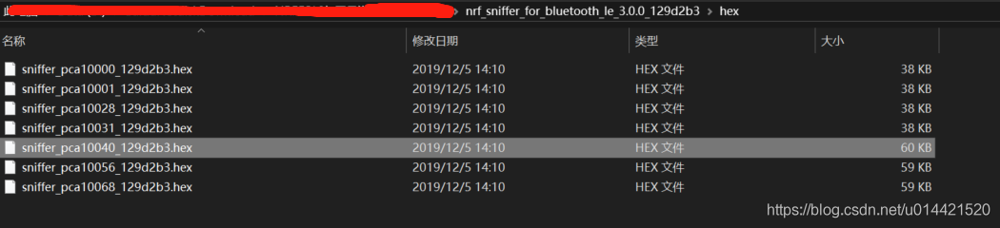
3.3. 软件安装
wireshark安装
wireshark是一款免费的并且功能强大的支持多协议的分析软件， 它的作用是把相应的协议数据包解析显示出来。点击这里获取下载地址，安装一路点击下一步即可完成，没有啥特别需要注意的地方。
python安装
安装python是为了安装pyserial，因为sniffer插件是通过pyserial来获取底层物理串口的数据。python版本可以是2.7也可以是最新的3.x，我系统中装了其他环境必须要用python2.7,所以就以python2.7为例来说明。
去官网获取python的安装包，然后一路next即可安装完成，安装完毕后配置系统环境变量，在Path里新建变量，如下图所示。
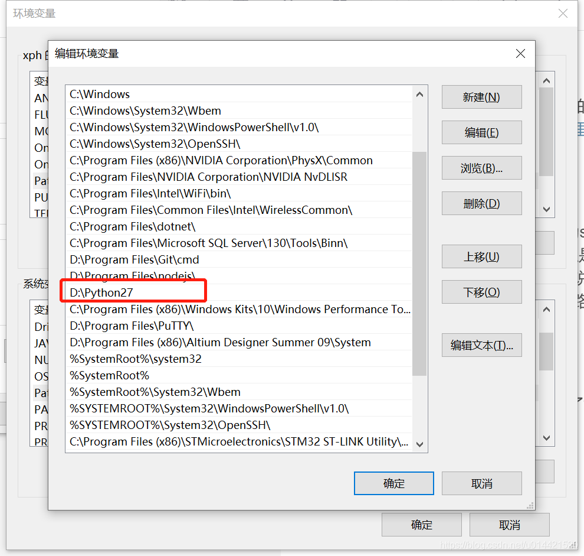 然后调出命令行验证是否安装成功。
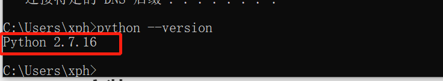
sniffer安装
sniffer是Nordic公司专门为nrf52xx系列蓝牙产品为wireshark编写的一个插件，只有改插件正确的安装，wireshark才能正常调用它并分析抓包数据。
在官网找到sniffer安装包，里面包含了wireshark的sniffer插件还有nrf52xx的抓包固件，如下图所示。
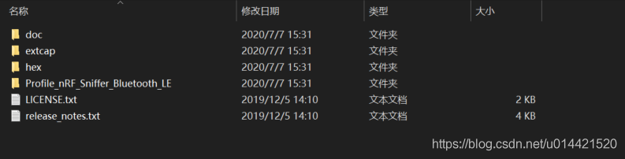
doc文件夹放的是一些说明文档和api参考手册，可以不看，影响不大。
extcap文件夹里面是wireshark插件。
hex文件夹里面是针对不同的nrf52xx芯片的抓包固件。
profile是用来解析BLE数据包的。
安装python需要的相关软件
打开命令行，定位到
..\nrf_sniffer_for_bluetooth_le_3.0.0_129d2b3\extcap\键入
pip3 install -r requirements.txt，安装python需要依赖的软件，主要是安装pyserial。完成后关闭命令行
把sniffer capture tool文件拷贝到wireshark的外部插件文件夹
运行wireshark
单击帮助->关于wireshark->文件夹 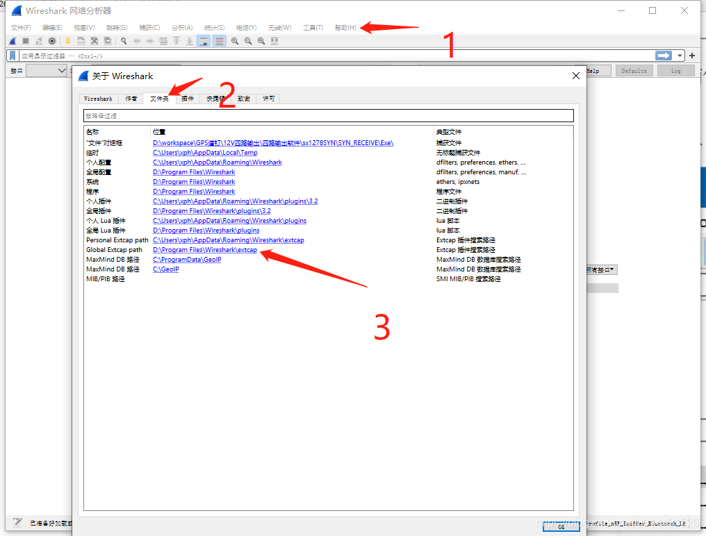
把
..\nrf_sniffer_for_bluetooth_le_3.0.0_129d2b3\extcap\下的所有文件拷贝到这个文件夹内
确认nRF sniffer可以正常运行
打开命令行，定位到刚才拷贝的那个文件夹下
输入
nrf_sniffer_ble.bat --extcap-interfaces，如果弹出下面的界面，则表示正常运行。 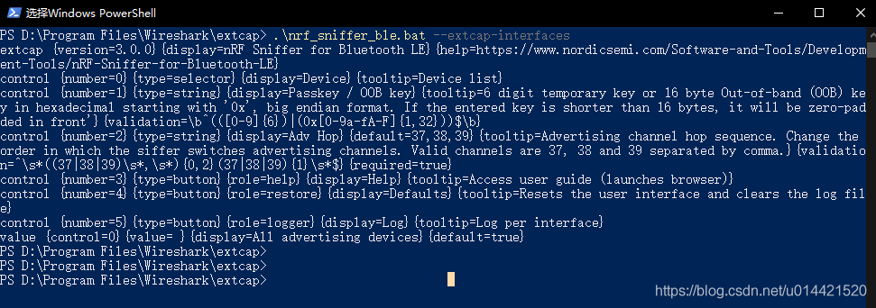 如果弹出其他错误，请确认python环境是否安装正确，以及pyserial是否安装成功。
在wireshark中使能nRF sniffer capture tool
打开wireshark
单击捕获->刷新接口列表 完成刷新 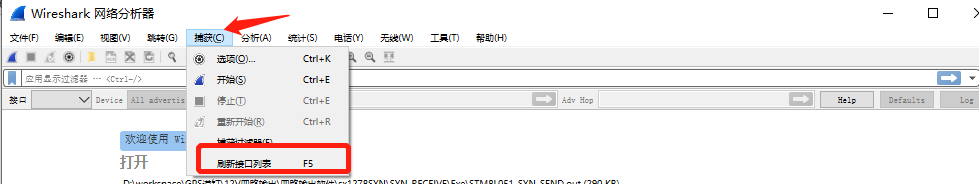
使能sniffer接口，然后就能看到nRF sniffer出现在下面的列表中了 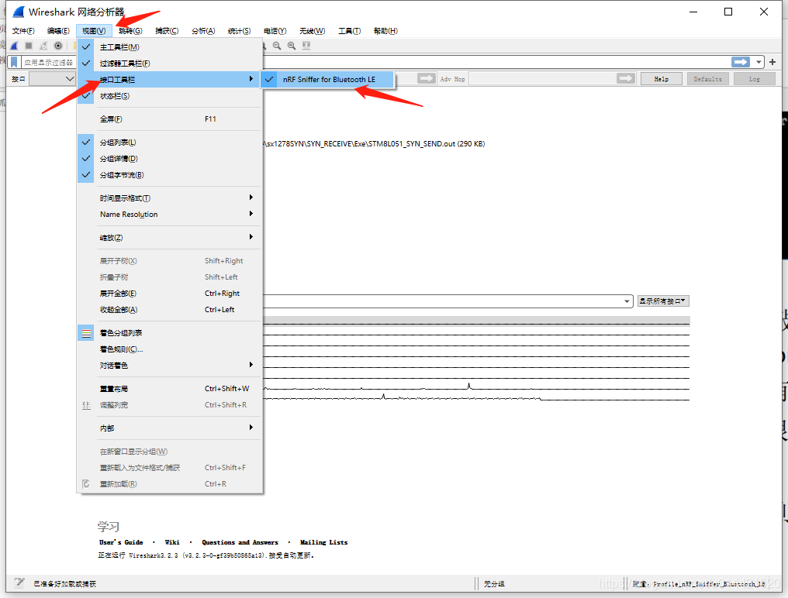
在wireshark中添加抓包的profile
如果不添加这个profile，wireshark抓到的数据包将不会解析成BLE数据包的格式，这给分析带来无尽的痛苦。
－单击 帮助－＞关于wireshark ->文件夹 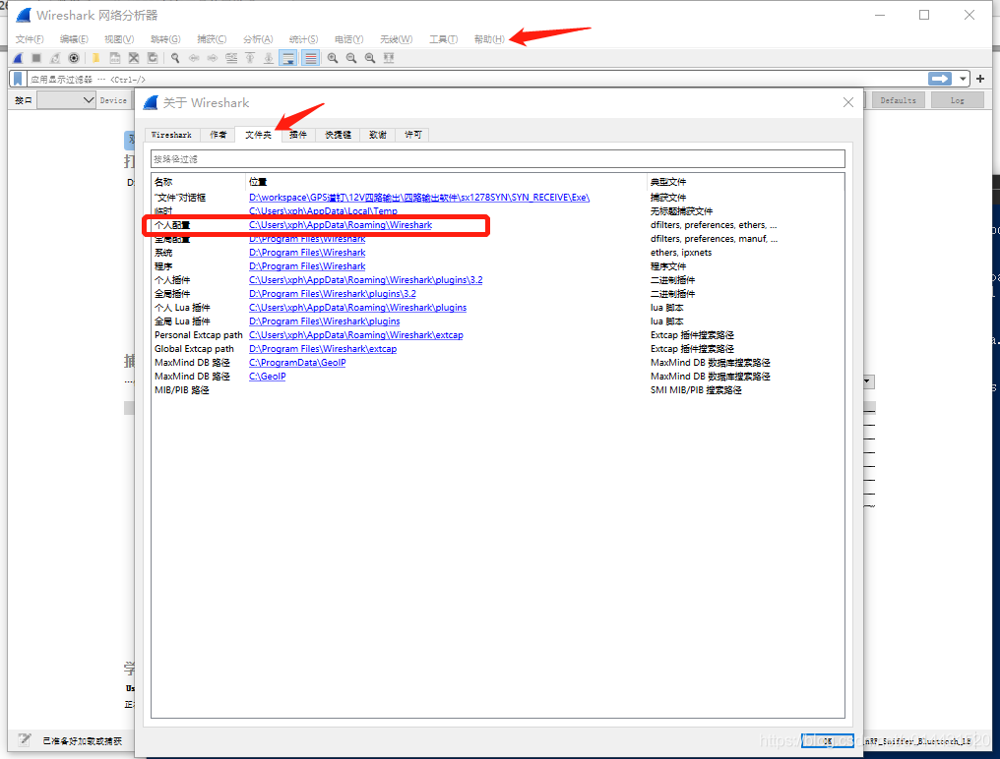
双击个人配置，弹出文件夹，将
Profile_nRF_Sniffer_Bluetooth_LE文件夹拷贝到该路径下的profiles文件里。
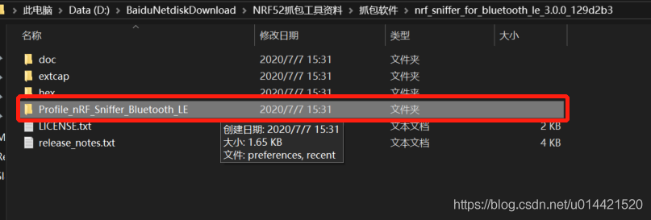
拷贝完成的路径如下图所示。 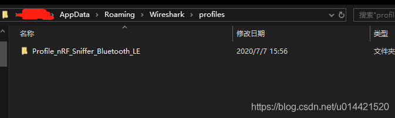
点击 编辑->configuration Profiles 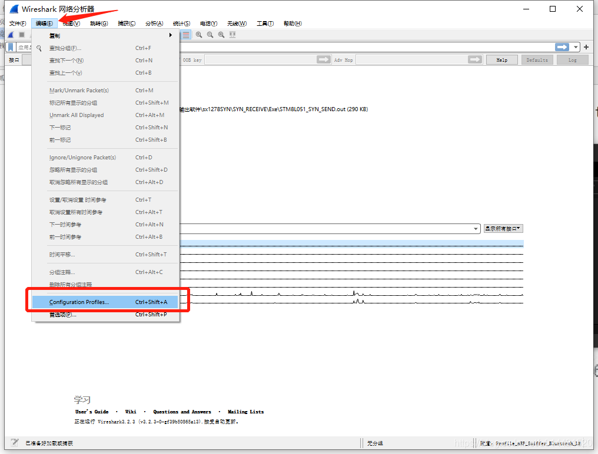
选中
Profile_nRF_Sniffer_Bluetooth_LE点击ok 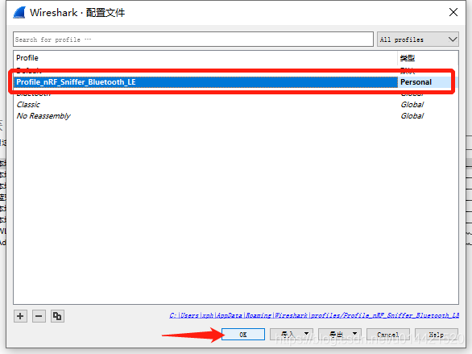
3.4. 运行nRF抓包工具
把刚才烧录好的nrf52xx dangle插入电脑usb口，然后把需要抓取包的手机和蓝牙外设放到dangle附近，运行wireshark。 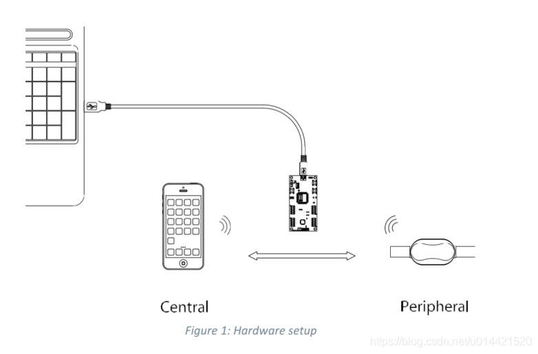 双击选择nRF Sniffer for Bluetooth LE COM18就可以抓包了。 不过请注意， 不同的电脑显示的COM口不一样， 只要是前面显示nRF Sniffer for Bluetooth LE就没问题。 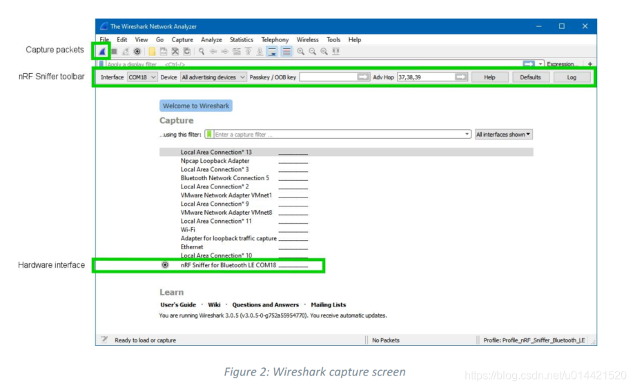
3.5. 基础使用指南
如果前面的配置都正确的话，现在应该可以抓到包了，基本的抓包界面如下图所示： 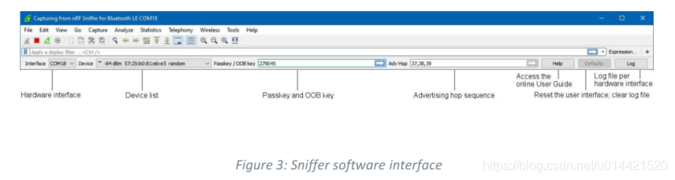
Hardware interface
显示当前可以用的所有设备， 假如USB口有一个抓包工具则显示一个COM口号； 如果有多个，则显示多个COM口号。
Device list
如果你选择”All advertising devices ”， 则显示周围所有在广播的蓝牙设备； 如果下拉选择指定设备， 则只显示从该设备抓取的数据。 如果在抓包过程中重新下拉选择另外的设备， 则当前的数据会丢失。
Passkey and OOB key
在某些连接加密的应用， 连接 的时候需要输passkey或者OOB key,在这个位置输入后， 然后点回车。
Advertising hop sequence
在默认情况下， 抓包工具按先37信道， 再38信道， 最后39信道的顺序抓广播包。 如果用户不按这个顺序抓， 则在这里修改即可。 修改完成后请记得按回车键。
RSSI filter
根据信号强度过滤。 可以直接在过滤器栏里面输入rssi >=xxx来进行过滤。 如果被抓到的包大于等于XX这个信号强度， 则显示出来； 如果小于这个强度， 则不显示。
使能BLE数据包着色
使能BLE数据包着色，分析协议更方便，具体设置如下： 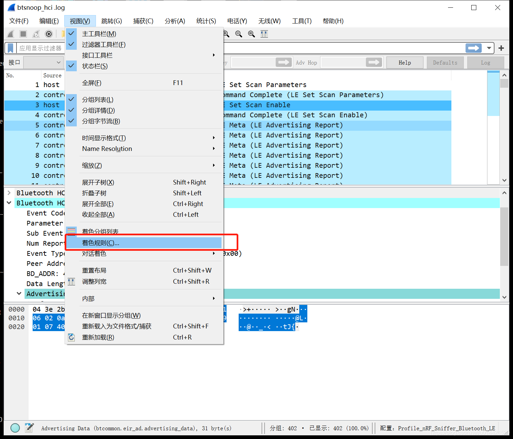 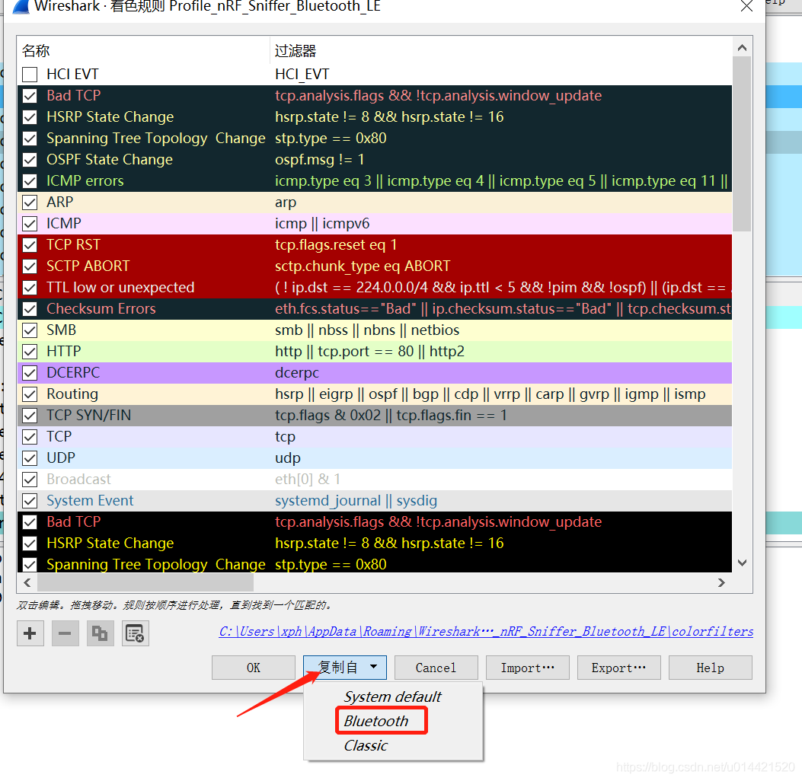
更具体的使用技巧，请参阅这位大佬写的blog。
3.6. 常见问题及解决方法
python 软件包下载失败
换pip源为清华源
增加timeout时间
翻墙
wireshark找不到nRF sniffer for Bluetooth LE
查看设备管理器COM口是否存在，没有则拔插dangle或者重新安装串口驱动
抓包固件是否烧录正确
重启wireshark